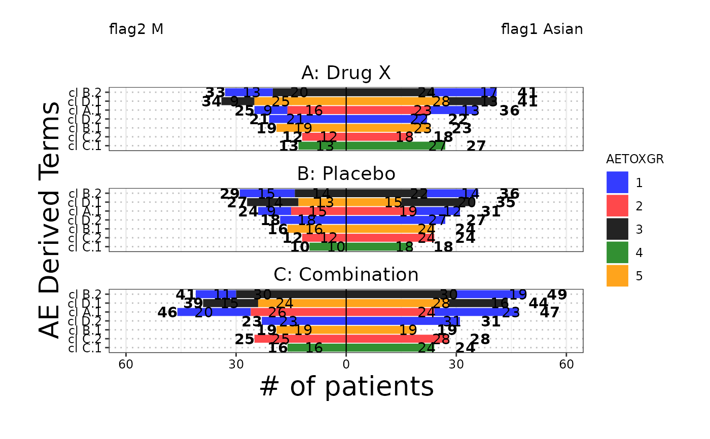

The butterfly plot is often used in Early Development (ED) and is an opposed
barplot that shows instances of AEs or # of patients by category separated by
a dichotomization variable. Each bar can be color coded according
to a variable of choice and sorted according to either alphabetical order or the
maximum count.
Usage
g_butterfly(
category,
right_flag,
left_flag,
id = NULL,
group_names = NULL,
block_count = c("# of patients", "# of AEs"),
block_color = NULL,
facet_rows = NULL,
x_label = block_count,
y_label = "AE Derived Terms",
legend_label = "AETOXGR",
sort_by = c("count", "alphabetical", "right", "left"),
show_legend = TRUE
)Arguments
- category
vector of y values
- right_flag
vector of
logicalof the same length ascategory. used to filtercategoryfor the right side of the barplot. to maintain backward compatibility, a vector of 1s and 0s would also work.- left_flag
vector of
logicalof the same length ascategory. used to filtercategoryfor the left side of the barplot. to maintain backward compatibility, a vector of 1s and 0s would also work.- id
unique subject identifier variable.
- group_names
string vector of length 2 with desired names of dichotomization variables required format : first name corresponds to the name of the right side second name corresponds to name of the left side default: will extract column names from group
- block_count
string - what to count by (ex: # of
AEs or # of patients)- block_color
vector - color coding of bar segments
- facet_rows
vector defines what variable is used to split the plot into rows, default here is NULL
- x_label
string of text for x axis label, default is block_count
- y_label
string of text for y axis label, default is
AEDerived Terms- legend_label
characterfor legend label, default is"AETOXGR"- sort_by
character string that defines the ordering of the class and term variables in the output table, options:
"alphabetical","count","left","right", default here is set to"count"- show_legend
logical(1)of whether color coding legend is included, default here is FALSE
Examples
library(dplyr)
library(nestcolor)
ADSL <- osprey::rADSL %>%
select(USUBJID, STUDYID, SEX, ARM, RACE) %>%
dplyr::filter(SEX %in% c("F", "M"))
ADAE <- osprey::rADAE %>% select(USUBJID, STUDYID, AEBODSYS, AETOXGR)
ANL <- left_join(ADAE, ADSL, by = c("STUDYID", "USUBJID"))
ANL <- ANL %>%
dplyr::mutate(flag1 = ifelse(RACE == "ASIAN", 1, 0)) %>%
dplyr::mutate(flag2 = ifelse(SEX == "M", 1, 0))
ANL <- na.omit(ANL)
# Example 1, # of AEs
g_butterfly(
category = ANL$AEBODSYS,
right_flag = ANL$flag1,
left_flag = ANL$flag2,
group_names = c("flag1 Asian", "flag2 M"),
block_count = "# of AEs",
block_color = ANL$AETOXGR,
id = ANL$USUBJID,
x_label = "# of AEs",
y_label = "AE Body System",
legend_label = "AETOXGR",
sort_by = "count",
show_legend = TRUE
)
# Example 2, # of patients with facet
g_butterfly(
category = ANL$AEBODSYS,
right_flag = ANL$flag1,
left_flag = ANL$flag2,
group_names = c("flag1 Asian", "flag2 M"),
block_count = "# of patients",
block_color = ANL$AETOXGR,
facet_rows = ANL$ARM,
id = ANL$USUBJID,
x_label = "# of patients",
y_label = "AE Derived Terms",
legend_label = "AETOXGR",
sort_by = "count",
show_legend = TRUE
)
